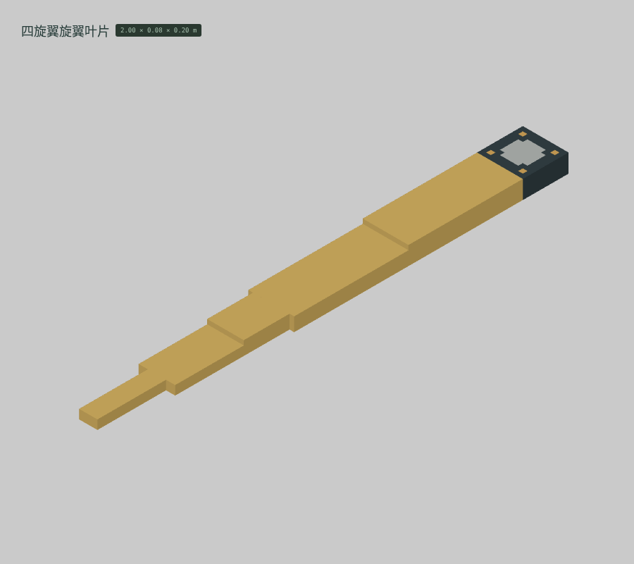
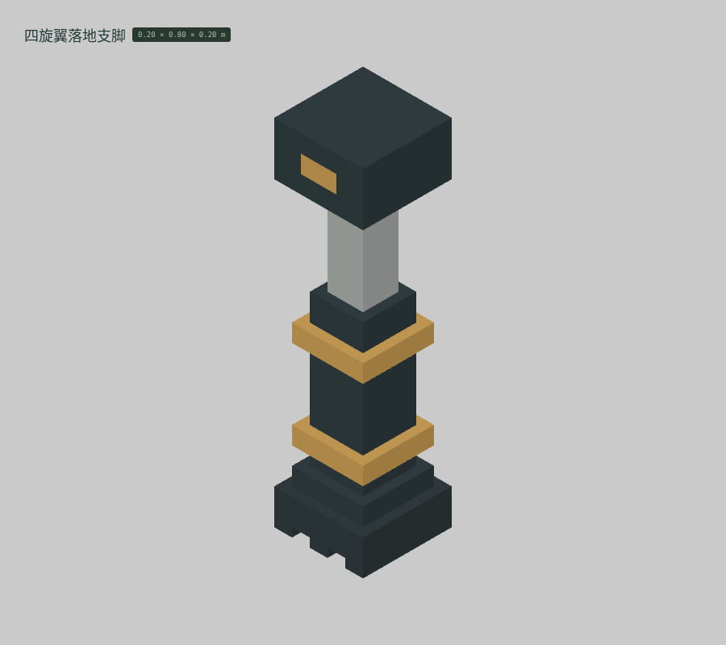
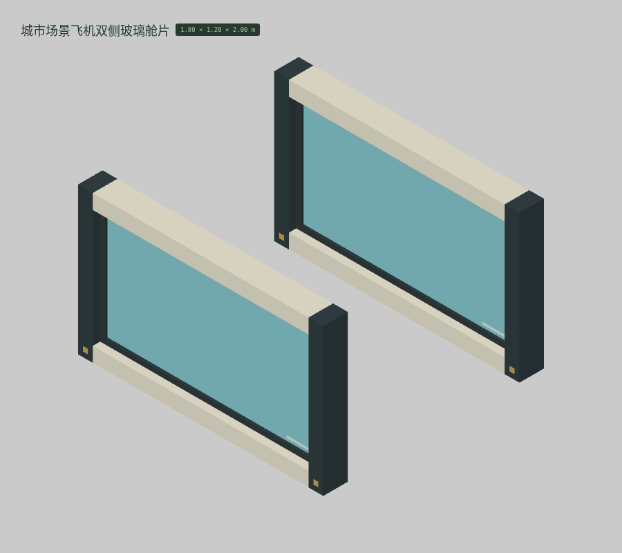
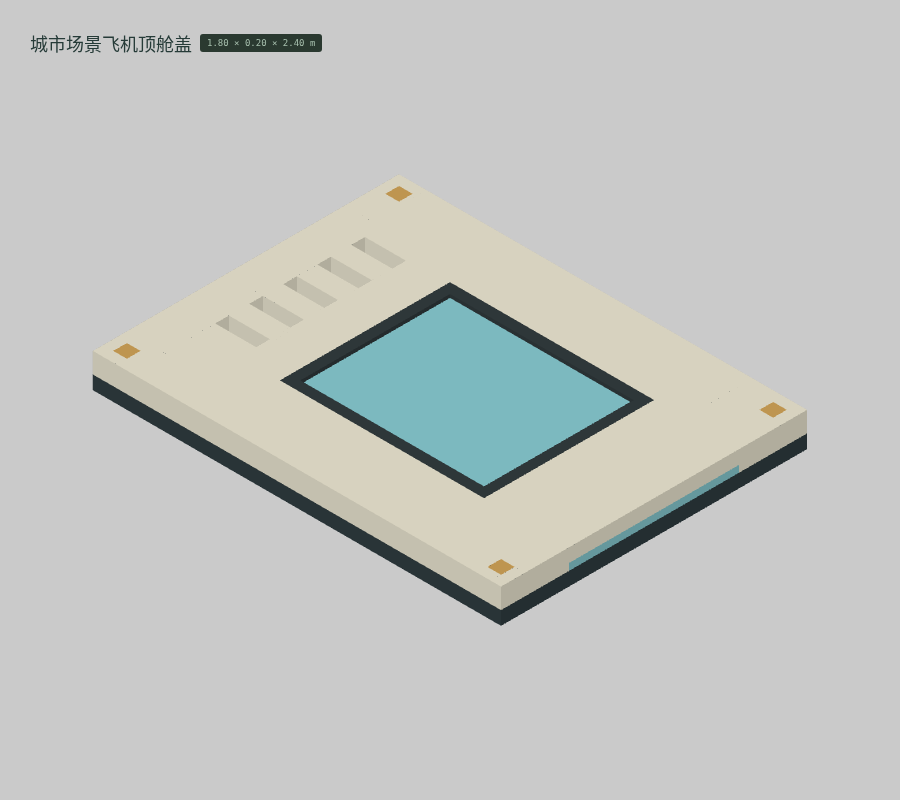
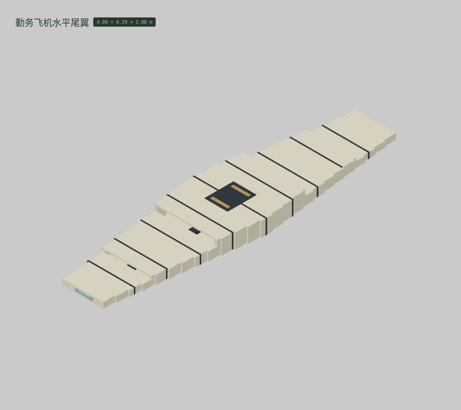
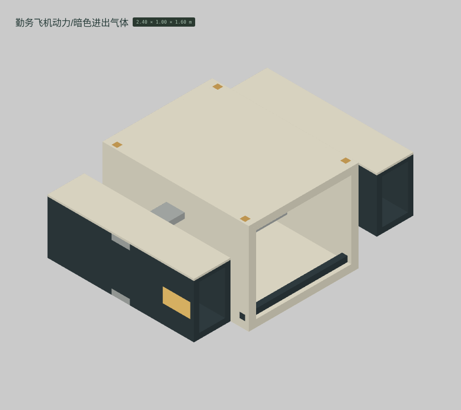

<!doctype html><meta charset="utf-8"><style>*{box-sizing:border-box}body{margin:0;background:#dfe1dd;color:#273d34;font:18px system-ui,'PingFang SC'}header{padding:26px 36px}h1{font-size:30px;margin:0 0 10px}main{display:grid;grid-template-columns:repeat(4,1fr)}figure{margin:0;border:1px solid #b7c0b6;background:#d4d8d1}img{display:block;width:100%}figcaption{padding:13px 22px 18px;font-size:19px}small{display:block;font-size:13px;margin-top:5px}footer{padding:24px 36px}</style><header><h1>云山 · M021 · 按参考图重建的 12 件体素候选</h1>真实编辑器截图 · 保留基础色 · 无纹理 / AO / 辉光 · 原生体素网格（格距标在各模型下方）</header><main><figure><figcaption><b>BUILT-186 四旋翼支臂</b><small>20 mm 格距 · 4,904 格 · 实际边界 1.80 × 0.20 × 0.20 m</small></figcaption></figure><figure><figcaption><b>BUILT-187 四旋翼旋翼叶片</b><small>20 mm 格距 · 2,750 格 · 实际边界 2.00 × 0.08 × 0.20 m</small></figcaption></figure><figure><figcaption><b>BUILT-188 四旋翼落地支脚</b><small>20 mm 格距 · 2,020 格 · 实际边界 0.20 × 0.80 × 0.20 m</small></figcaption></figure><figure><figcaption><b>BUILT-189 城市场景飞机双侧玻璃舱片</b><small>20 mm 格距 · 54,528 格 · 实际边界 1.80 × 1.20 × 2.00 m</small></figcaption></figure><figure><figcaption><b>BUILT-190 城市场景飞机顶舱盖</b><small>20 mm 格距 · 69,056 格 · 实际边界 1.80 × 0.20 × 2.40 m</small></figcaption></figure><figure><figcaption><b>BUILT-191 勤务飞机主翼</b><small>20 mm 格距 · 115,350 格 · 实际边界 8.40 × 0.20 × 2.40 m</small></figcaption></figure><figure><figcaption><b>BUILT-192 勤务飞机垂尾</b><small>20 mm 格距 · 45,090 格 · 实际边界 0.40 × 1.80 × 2.00 m</small></figcaption></figure><figure><figcaption><b>BUILT-193 勤务飞机水平尾翼</b><small>20 mm 格距 · 27,192 格 · 实际边界 4.00 × 0.20 × 1.00 m</small></figcaption></figure><figure><figcaption><b>BUILT-194 勤务飞机动力/暗色进出气体</b><small>20 mm 格距 · 114,648 格 · 实际边界 2.40 × 1.00 × 1.60 m</small></figcaption></figure><figure><figcaption><b>BUILT-195 登机眼位下可见操纵台壳</b><small>10 mm 格距 · 105,832 格 · 实际边界 1.20 × 0.20 × 1.40 m</small></figcaption></figure><figure><figcaption><b>BUILT-205 隔离共享高桥桥板/接缝</b><small>100 mm 格距 · 43,200 格 · 实际边界 9.00 × 0.60 × 8.00 m</small></figcaption></figure><figure><figcaption><b>BUILT-206 隔离共享高桥梁体</b><small>100 mm 格距 · 34,344 格 · 实际边界 9.00 × 1.20 × 8.20 m</small></figcaption></figure></main><footer>每格独立适配画幅；柜体、灯具和器具比例不是同一个画幅比例尺。几何候选，尚未通过人工美术验收。无图片重绘或贴图冒充几何。</footer>